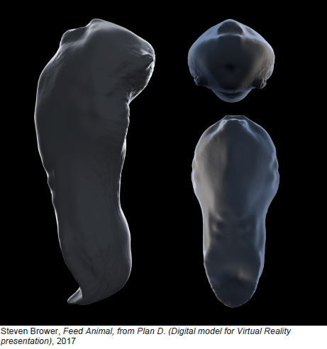

The exhibition is now on at Visual arts centre in UT Austin. The exhibit closes on February 24th.Click here to have a look at the exhibition guide.
Biography
Steven Brower's diverse projects involve fabricating various aerospace artifacts including space suits, planetary landers, and a lunar excursion module permanently installed at the Seattle Museum of Space Flight. Brower's multifaceted and expansive work appears in educational contexts, film and television productions, galleries and museums. BPL, a fictitious aerospace company founded by Brower for art purposes, ultimately had to become a legitimate business entity, having succeeded in multiple crossdisciplinary research efforts with scientists and government entities.
Projects
1. PLAN D (Not in A Million Years)
Artist: Steven Brower
Dimensions: variable
Materials: Found objects, HTC Vive VR system, computers, electronics, electronic and mixed media, aluminum and plastic.
Year: 2017
Statement:
Prior to finalizing ideas about the content of my submission to this project (which technically includes now), I was offered a job in one of my other professional lives that would cause me to start over for the fourth time. I was hired to design a television miniseries that was supposed to use the best scientific thinking to speculate about what will happen to the Earth and Humanity over the course of the next million years. I was eager to get into this project because it touched on many subjects I've had an interest in, among them, technology, robotics, architecture, evolution, space travel, transhumanism, and most importantly, crackpot schemes. I was very curious to see what scientists would do with these notions, which are mental exercises really, but which I was supposed to give dramatic reality and make plausible and recognizable to a wide audience.
In the course of being a production designer, many ideas are tried and rejected for many reasons. Often, the reasons for which ideas are discarded are internal to the process of making such a complex object/event as a film. These reasons can be attributed to budgets, weather, actor availability, coffee spilling on laptops, keys locked in cars, food allergies, corporate mergers, Russian Hacking, avarice, lack of taste, excess of taste, fine print, sleep deprivation, quasitasking, and dyspepsia, to name a few. Very often, ideas are not pursued for very good reasons, and after all, the continual peristalsis of introducing ideas and rejecting them is intrinsic to any creative process. In the case of a 'scientific' speculation such as the one I was working on, I realized there was possibly more meaning than usual to the rejected ideas, as essentially we would be saying to the world 'no, this one, this particular idea, such as people cloning themselves for spare parts for instance, won't happen in a million years, for whatever reason,' which is hilarious, but that's entertainment.
When scientists are pressed to create science fiction, they often hedge, reasonably opting to 'never say never'. But if its true that for every event there are an infinite number of non-events, surely an eminent figure saying 'In the future people will upload their consciousnesses to solid state electronic media and become immortal,' is a way of making many more reasonable speculations seem outlandish. I started thinking of the rejected ideas as equally valid possible futures, no matter what the reason was for their unsuitability.
The client for this series, being a very well known entity, has considerable authority and is known primarily for pure documentary. The acquisition of this entity by a large network known for its pursuit of the blurring of fact and fiction means that these new speculative forays will become more common. It seems unlikely that the authoritative voice would lose its ability to persuade, given high enough 'production values'.
After a few months of working on the series, despite speculation fatigue, I decided to mothball my other plans for the Omnibus Filing and focus on presenting my rejected designs, the things that WON'T be happening in the next million years. Many of the subjects the series was to touch upon had relevance to the work being done at UT. Energy production, life sciences, nanotechnologies, and work in the humanities all played a big role in what was to be dramatized. I thought it would be nice to work with some of the conversations and experiences I've had with professors and students at UT in the re-presentation of these designs of the not-future.
Many of my favorite bad ideas seem especially well suited for 'Virtual Reality'. This simulation tool, as is the case with so many media, makes a Virtue of promising things everyone knows it can't deliver. It seems to me a way to couple this constant dithering over the future with a physiologically induced response, which is in itself more 'real' than either the VR scenario itself or what it looks like to an outside observer. It also seemed perfect since I've never worked with this medium before, nor do I have any experience with or interest in 'Gaming'.

In the gallery space, Visitors will be allowed turns wearing an apparatus that superimposes alternate realities on a variety of commonplace objects situated around the room. A vehicle developed for the purposes of transporting the burden of the technology around the space as well as serving as feeble agitprop will be available for one user at a time. The user's experience will parallel mine over the last few months as they interact with designs and scenarios that tug at their understanding of pedagogical structures. Visitors to the gallery who arrive while someone is already using the apparatus will be met with what appears to be a classic 'performance art' piece, with the wearer of the apparatus interacting with items in the room in ways that might suggest a desire to communicate or affect the psychology of the audience. Not simply an inward experience, the engagement of VR is a witnessed process, and thereby makes its own meaning, and creates its own ideas.
It is not really the intention of this display to say what will or will not happen; it is an attempt to create a recurring set of events that in some ways has a relationship with the experiences I have had in developing projects and also with my particular way of surviving in an increasingly mediated environment. It seems to have, as I've noticed in the months since I started this project, some metaphorical relationship to the way that the world has come to feel upside down and inside out; I hope this device, which is thought of sometimes as a diversion or an entertainment gadget, also comes to play a part in educating and motivating people who must know the difference between this world and some kind of nostalgia.
The exhibition is now on at Visual arts centre in UT Austin. The exhibit closes on February 24th.Click here to have a look at the exhibition guide.